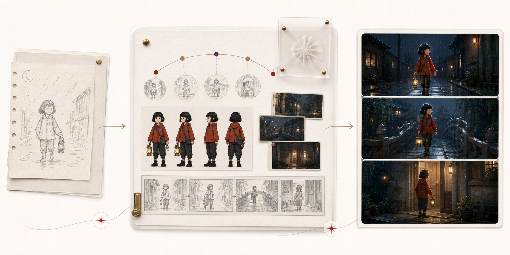

决定为什么值得讲
- 主题、情感与改编边界
- 完整故事是否通过
- 连续性和最终成片验收
先让故事成立，再让每一个镜头成立。
它不是把一句话直接变成视频，而是先确认完整故事，再完成剧情分镜、角色与服饰连续性、声音和剪辑，最后由人判断成片是否真的讲清楚了。

每一步都有明确产物；上一步没有确认，就不提前消耗下一步的生成成本。
一句脑洞、原典母题或知识卡。
得到：改编方向人物为什么行动，冲突如何变化，结局是否成立。
得到：故事定稿拆出节拍、人物关系、服饰与关键道具。
得到：设定档案按动作、情绪、对白和理解需要设计镜头。
得到：镜头计划锁定人物身份、服饰、道具和空间关系。
得到：视觉基准以上一镜真实结束状态连接下一镜。
得到：连续镜头旁白、对白、节奏与情绪共同服务故事。
得到：完整粗剪检查是否看懂、是否动人、是否保持一致。
得到：成片与方法两者可以协作，但入口和完成标准不同。
负责把脑洞或知识材料变成完整故事，并一路做到故事成片。
负责非故事视频、已有素材的剪辑、包装、演示与成片交付。
故事定稿与情节节拍
角色、服饰、场景与道具基准
分镜、镜头与声音方案
验收结论与连续性经验